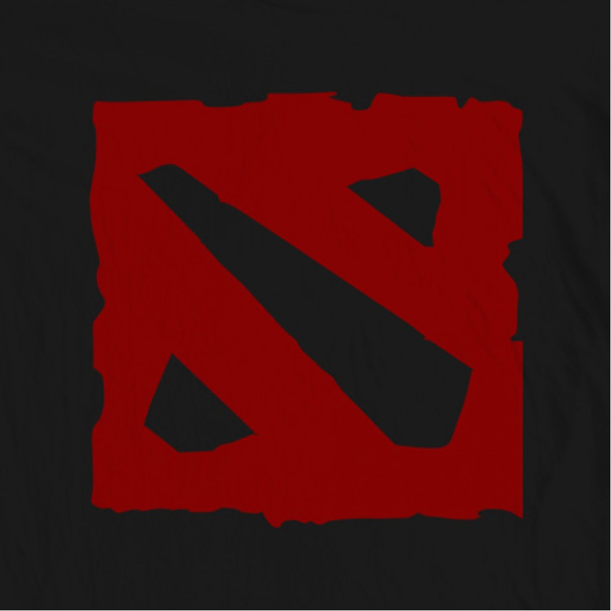
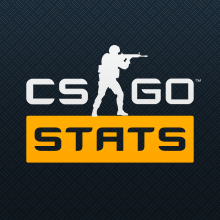

Since this is the internet and I prefer to remain anonymous you can call me One White Child. I spend most of my time hanging out with friends and playing competitive video games. In certain places I am a casual gamer but others I am hardcore like League of Legends, Dota 2, and CS GO. Due to my father being a self taught computer programmer I grew up around computers a lot. This inspired me to take this coding class. I also make techno music using an M-Audio keyboard running through the Ignite Software on my computer. This music gets uploaded to soundcloud for friends and family to see. I hope one day I can pair up with Monstercat to release one of my pieces. I designed this site based off Video Games and the material required to be in it. The evolution can be seen of my learning as everything I have learned throughout the year is featured on this site. The feature I am most proud of is my Main Website because it allowed me to channel my creativity through it as future projects were more about sticking to guidelines. Good Luck and Have Fun!
Thanks for the check m8.